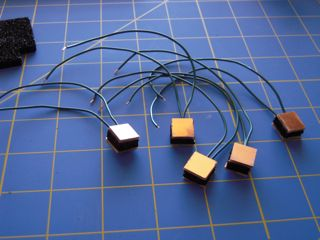

This is a combination of wanting to do something with my Christmas present, an Arduino, and something from a dream. I really don’t remember much else from the dream, but there was this musical instrument that stuck. The whole dream had a style that was quite the cross of Riven and Steampunk.
The Lydkone, this musical instrument, worked by altering the ripples in the flow of æther. (well, the equivalent to æther in this frame, but I’m calling æther just for ease.) These ripples then resonated through pipes, a bit like a pipe organ. There were five keys that each routed to an output pipe, a limit only to the inexperienced player. By moving one’s hand across the input port that gathered æther, the over all amount of æther available could be adjusted, affecting the pitch of all five notes. Still there was never enough æther to drive all five pipes at once; the best a quality Lydkone could drive was three.
Now while I am pretty sure that the dream-mechanics that drove the instrument don’t exist in this frame of reality, faking it with a synth should be quite straightforward. Which takes us back to the Arduino. So five fixed keys, one variable hand-wavy-thing, and three note or voice output, then wrap it all in a pretty case. And somewhere along the way, learn how to play it. (such fun!)
Making Sound
First thing is to figure out how to make sound with the Arduino. Fortunately, there are many different ways of doing this, and have been well covered by others. After pondering the choices (PWM, R2R DAC, Hardware DAC, Voltage Controlled Oscillators, Synthesizer Chip, MIDI, MP3 Decoder Chip). I decided on using a handmade R2R DAC with three DACs, each at four bits, largely because I wanted try out building my own DAC. While having only four bits of resolution will chop up the sound a bit, it will be sufficient enough for my use. Besides, the fuzziness will add some character to the instrument. This also uses nearly all of the digital lines on the Arduino, which is fine for this project.
So I made a quick stop at Radio Shack for resistors and spent some time to populate the Proto Shield. This did mean that the resisters in the R2R are not perfectly R and 2R, but its close enough.

Once I was convinced that the hardware would work, I got another Proto Shield and soldered things down.
{kind=link}
With the output hardware all finished up, I need some software to drive it. This took a bit because my initial design was based on having a single sample, and bending the pitch in the Arduino for each DAC to get the different notes; that is three concurrent pitch bends at once. There were many failed implementations trying to do this. Finally, I changed my design to have five samples, one for each note. The initial implementation of this new design worked as desired the first time. Good thing to keep in mind; if things are going too tough, try doing it differently.
Within the trials of getting the output software written, there was the small issue of which notes to use. This turned out to be an easy pick. There are five keys so use a pentatonic scale. This is somewhat superficial, since it is really just five samples in the code that happen to be the same waveform at the five pitches. I picked a simple sawtooth wave for initial testing. At a later date, I’d like to change it to something a little more complex.
Controlling
As stated above, playing the Lydkone is done with five keys with a theremin like pitch adjust. The easiest way to do the pitch adjust is with a photocell and an analog read. The easiest route for the keys is to use switches, but that gives a very binary action to the playing. The Lydkone is supposed to be an analog machine, so using pressure sensors for each key gives the kind of response that will be expected. This is workable, since the Arduino gives us six analog inputs and this will use them all. (should use them up anyways, otherwise it is like wasting them or something.)
Pressure sensors run about $5 or more a piece, and I’m no too keen at this point to be spending that much on sensors. Making your own pressure sensor is quiet straightforward. Take some conductive foam and some copper clad pcb. Then add wires a a small touch of glue to hold it together. TaDa! Pressure sensors:

{kind=link}
Now one twist left for these: sampling. Running the ADC takes time, but we want this to be quite responsive. It is not good if it takes a second or more after pressing a key to get sound. Actually, it is not good if it takes more than a couple hundred milli-seconds. So if we use the stock analog_read() function, it takes about 600 to 700 milli-seconds to read all of the ADCs. That is simply too long. This is because while there are 6 ADC inputs, there is actually only one ADC.
There are two things that the data sheet clues us into to help deal with this. First is an interrupt that fires when the ADC is complete; the second is free running mode. Free running automatically restarts the ADC when it finishes, so we won’t loose cycles restarting. Then in the interrupt, we save the result and advance to the next ADC input. We let this run in the background, and pull out the saved values when we need them. With this, it takes 6 to 7 micro-seconds to read all ADC inputs. Quite an improvement.
To get the best results from our analog sensors, we want them to span the nearly the entire range of voltage that the ADC can take. Default for the Arduino is 0 to 5 volts. This is done with a simple voltage divider. You can make either R1 or R2 adjustable, I chose R2 because it made the layout on the proto-board easier. After a little spreadsheet work, I found that a good value for R1 is about midpoint of the range of R2.
{kind=link}
Then I discovered the biggest hurdle of homemade sensors, that each one is different. This is true with any kind of sensor actually; it just seems a bit exaggerated with homemade ones. The upside is that this can be completely handled in software. I already need to map the range of the ADC output to a useful volume range. So now instead of mapping from the entire ADC range, I just use a subset range of what a given sensor actually produces.
There are a couple of ways of doing sensor calibration. One way is to do some extensive testing of your sensors by logging the data so you can do some analysis and incorporate that results into the program. Another is to add some kind of calibration code to the program that basically does all of the logging and analysis for you. This is usually done either at startup or a ‘lets enter calibrate mode’ button. This is a nice method because if things change, and they will change, you can re-calibrate to adjust for those changes.
I decided to take it one step further and calibrate all the time. This works for this specific case because all that is being recorded for calibration is the maximum and minimum value seen from each sensor. So every time it checks the saved ADC values, it also checks if it is a new max or min. If it is, the new value is recorded. If I wanted, I could have also saved these into EEPROM so that they wouldn’t be lost when the power is removed. However this calibration is easy and quick enough that I didn’t bother.
A final detail is that there should be at most three notes playing, no matter how many keys are pressed. This is very easy to do in software, just stop when it fills the third voice. In my current implementation, this means if you press all five keys, only the first three notes play. Pretty much a non-issue, since a majority of the time, I only expect that one or two keys will be pressed.
Encased
A pile of wires and circuit boards is not very fitting to the style themes of Riven or Steampunk much less a blend of the two. So a proper case will need to be made. However, given my current somewhat transitory status, this is something that will have to wait. I am not thrilled with this, but it is what it is.
How does it Sound?
Here is a quick sound test. You’ll need to turn it up a bit, since there is only a buffer and no amp. It is very quiet. (I tried unsuccessfully a couple of times to put together a LM386 amp, not sure what I’m messing up there, but hey, I tried.)
{kind=link}
When I started this, I really didn’t understand how sound generation worked at all. Now that I’ve gone through this, I think the only real change I would make is to have a single eight or twelve bit R2R. Then just do the mixing inside the Arduino, rather than having three four bit R2R’s and having them mixed electrically. (It wouldn’t be too hard to convert this construction… Maybe some other time.)
{kind=link}